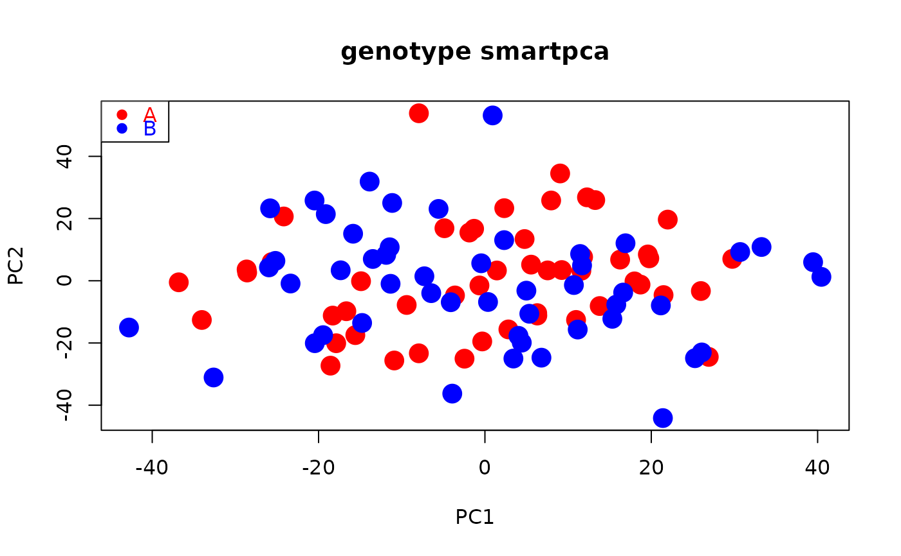

R/smart_mva.R
smart_mva.RdComputes Principal Component Analysis (PCA) for variable x sample genotype data, such as Single Nucleotide Polymorphisms (SNP), in combination with Permutational Multivariate Analysis of Variance (PERMANOVA) and Permutational Multivariate Analysis of Dispersion (PERMDISP).
A wrapper of functions smart_pca, smart_permanova and smart_permdisp.
Genetic markers such as SNPs can be scaled by centering, z-scores and genetic drift-based dispersion.
The latter follows the SMARTPCA implementation of Patterson, Price and Reich (2006).
Optimized to run fast computation for big datasets.
smart_mva(snp_data, packed_data = FALSE, sample_group, sample_remove = FALSE,
snp_remove = FALSE, pca = TRUE, permanova = TRUE, permdisp = TRUE,
missing_value = 9, missing_impute = "mean", scaling = "drift", program_svd =
"RSpectra", sample_project = FALSE, pc_project = c(1:2), sample_distance =
"euclidean", program_distance = "Rfast", target_space = "multidimensional",
pc_axes = 2, pairwise = FALSE, pairwise_method = "holm", permutation_n =
9999, permutation_seed = 1, dispersion_type = "median", samplesize_bias =
FALSE)File name read from working directory.
SNP = rows, samples = columns without row names or column headings.
SNP values must be count data (no decimals allowed).
File extension detected automatically whether text or EIGENSTRAT.
See details.
Logical value for EIGENSTRAT, irrelevant for text data.
Default packed_data = FALSE assumes uncompressed EIGENSTRAT.
packed_data = TRUE for compressed or binary EIGENSTRAT (PACKENDANCESTRYMAP).
Character or numeric vector assigning samples to groups. Coerced to factor.
Logical FALSE or numeric vector indicating column numbers (samples) to be removed from computations.
Default sample_remove = FALSE keeps all samples.
Logical FALSE or numeric vector indicating row numbers (SNPs) to be removed from computations.
Default snp_remove = FALSE keeps all SNPs.
See details.
Logical indicating if PCA is computed.
Default TRUE.
Logical indicating if PERMANOVA is computed.
Default TRUE
Logical indicating if PERMDISP is computed.
Default TRUE.
Number 9 or string NA indicating missing value.
Default missing_value = 9 as in EIGENSTRAT.
If no missing values present, no effect on computation.
String handling missing values.
Default missing_impute = "mean" replaces missing values of each SNP by mean of non-missing values across samples.
missing_impute = "remove" removes SNPs with at least one missing value.
If no missing values present, no effect on computation.
String. Default scaling = "drift" scales SNPs to control for expected allele frequency dispersion caused by genetic drift (SMARTPCA).
scaling = "center" for centering (covariance-based PCA).
scaling = "sd" for centered SNPs divided by standard deviation (correlation-based PCA).
scaling = "none" for no scaling.
See details.
String indicating R package computing single value decomposition (SVD).
Default program_svd = "Rspectra" for svds.
program_svd = "bootSVD" for fastSVD.
See details.
Numeric vector indicating column numbers (ancient samples) projected onto (modern) PCA space.
Default sample_project = FALSE implements no projection.
See details.
Numeric vector indicating the ranks of the PCA axes ancient samples are projected onto. Default pc_ancient = c(1, 2) for PCA axes 1 and 2.
If program_svd = "RSpectra", length(pc_ancient) must be smaller than or equal to pc_axes.
No effect on computation, if no ancient samples present.
Type of inter-sample proximity computed (distance, similarity, dissimilarity).
Default is Euclidean distance.
See details.
A string value indicating R package to estimate proximities between pairs of samples.
Default program_distance = "Rfast" uses function Dist; program_distance = "vegan" uses vegdist.
See details.
String.
Default target_space = "multidimensional" applies PERMANOVA and/or PERMDISP to sample-by-sample triangular matrix computed from variable-by-sample data, pc_axes has no effect on computation. target_space = "pca" applies PERMANOVA and/or PERMDISP to sample-by-sample data in PCA space, pc_axes determines number of PCA axes for testing.
Number of PCA axes computed always starting with PCA axis 1.
Default pc_axes = 2 computes PCA axes 1 and 2 if target_space = "pca".
No effect on computation if target_space = "multidimensional".
Logical.
Default pairwise = FALSE computes global test. pairwise = TRUE computes global and pairwise tests.
String specifying type of correction for multiple testing.
Default "holm".
Number of permutations resulting in PERMANOVA/PERMDISP test p value.
Default 9999.
Number fixing random generator of permutations.
Default 1.
String indicating quantification of group dispersion whether relative to spatial "median" or "centroid" in PERMDISP.
Default "median".
Logical. samplesize_bias = TRUE for dispersion weighted by number of samples per group in PERMDISP.
Default pairwise = FALSE for no weighting.
Returns a list containing the following elements:
pca.snp_loadings: Dataframe of principal coefficients of SNPs. One set of coefficients per PCA axis computed.
pca.eigenvalues: Dataframe of eigenvalues, variance and cumulative variance explained. One eigenvalue per PCA axis computed.
pca_sample_coordinates: Dataframe showing PCA sample summary. Column Group assigns samples to groups. Column Class specifies if samples were "Removed" from PCA or "Projected" onto PCA space. Additional columns show principal components (coordinates) of samples in PCA space (e.g., PC1, PC2, ...).
test_samples: Dataframe showing test sample summary. Column Group assigns samples to tested groups. Column Class specifies if samples were used in or removed from testing (PERMANOVA and/or PERMDISP). Column Sample_dispersion shows sample dispersion relative to spatial "median" or "centroid" used in PERMDISP.
permanova.global_test: List with PERMANOVA results including degrees of freedom, sum of squares, mean sum of squares, F statistic, variance explained (R2), and p-value.
permanova.pairwise_test: List with PERMANOVA results including F statistic, variance explained (R2), p-value and corrected p-value per group pair.
permdisp.global_test: List with PERMDISP results including degrees of freedom, sum of squares, mean sum of squares, F statistic, and p-value.
permdisp.pairwise_test: List with PERMDISP results including F statistic, p-value, and corrected p-value per group pair. Only returned if pairwise = TRUE.
permdisp.bias: Character string indicating whether PERMDISP dispersion was corrected for unequal group sizes.
permdisp.group_location: Dataframe showing coordinates of group "medians" or "centroids" in PERMDISP.
test.pairwise_correction: Character string describing the multiple testing correction used in PERMANOVA and/or PERMDISP.
test.permutation_number: Number of permutations used to calculate F-statistics.
test.permutation_seed: Seed used for reproducible permutation results in PERMANOVA and/or PERMDISP.
See details in other functions for conceptualization of PCA (smart_pca) (Hotelling 1993), SMARTPCA (Patterson, Price and Reich 2006), PERMANOVA (smart_permanova) (Anderson 2001) and PERMDISP (smart_permdisp (Anderson 2006), types of scaling, ancient projection, and correction for multiple testing.
Users can compute any combination of the three analyses by assigning TRUE or FALSE to pca and/or permanova and/or permdisp.
PERMANOVA and PERMDISP exclude samples (columns) specified in either sample_remove or sample_project.
Projected samples are not used for testing as their PCA coordinates are derived from, and therefore depend on, the coordinates of non-projected samples.
Data read from working directory with SNPs as rows and samples as columns. Two alternative formats: (1) text file of SNPs by samples (file extension and column separators recognized automatically) read using fread; or (2) duet of EIGENSTRAT files (see https://github.com/DReichLab/EIG) using vroom_fwf, including a genotype file of SNPs by samples (*.geno), and a sample file (*.ind) containing three vectors assigning individual samples to unique user-predefined groups (populations), sexes (or other user-defined descriptor) and alphanumeric identifiers.
For EIGENSTRAT, vector sample_group assigns samples to groups retrievable from column 3 of file *.ind.
SNPs with zero variance removed prior to SVD to optimize computation time and avoid undefined values if scaling = "sd" or "drift".
Users can select subsets of samples or SNPs by introducing a vector including column numbers for samples (sample_remove) and/or row numbers for SNPs (snp_remove) to be removed from computations.
Function stops if the final number of SNPs is 1 or 2.
EIGENSOFT was conceived for the analysis of human genes and its SMARTPCA suite so accepts 22 (autosomal) chromosomes by default.
If >22 chromosomes are provided and the internal parameter numchrom is not set to the target number chromosomes of interest, SMARTPCA automatically subsets chromosomes 1 to 22.
In contrast, smart_mva accepts any number of autosomes with or without the sex chromosomes from an EIGENSTRAT file.
# Path to example genotype matrix "dataSNP"
pathToGenoFile = system.file("extdata", "dataSNP", package = "smartsnp")
# Assign 50 samples to each of two groups and colors
my_groups <- as.factor(c(rep("A", 50), rep("B", 50))); cols = c("red", "blue")
# Run PCA, PERMANOVA and PERMDISP
mvaR <- smart_mva(snp_data = pathToGenoFile, sample_group = my_groups)
#> Checking argument options selected...
#> Argument options are correct...
#> Loading data...
#> Imported 10000 SNP by 100 sample genotype matrix
#> Time elapsed: 0h 0m 0s
#> Filtering data...
#> No samples projected after PCA computation
#> 10000 SNPs included in PCA & PERMANOVA & PERMDISP computations
#> 1 SNPs omitted from PCA computation
#> 100 samples included in PCA & PERMANOVA & PERMDISP computations
#> 0 samples ommitted from PERMANOVA & PERMDISP analyses
#> Completed data filtering
#> Time elapsed: 0h 0m 0s
#> Scanning for invariant SNPs...
#> Scan complete: no invariant SNPs found
#> Time elapsed: 0h 0m 0s
#> Checking for missing values...
#> 6341 SNPs contain missing values
#> Imputing SNPs with missing values...
#> Imputation with means completed: 10058 missing values imputed
#> Time elapsed: 0h 0m 0s
#> Scaling values by SNP...
#> Centering and scaling by drift dispersion...
#> Completed scaling using drift
#> Time elapsed: 0h 0m 0s
#> Computing singular value decomposition using RSpectra...
#> Completed singular value decomposition
#> Time elapsed: 0h 0m 1s
#> Extracting eigenvalues and eigenvectors...
#> Eigenvalues and eigenvectors extracted
#> Time elapsed: 0h 0m 1s
#> Completed PCA computation
#> Time elapsed: 0h 0m 1s
#> Performing PERMANOVA & PERMDISP testing...
#> Construct triangular matrix of sample by sample proximities in multidimensional space...
#> Completed construction of triangular matrix of sample by sample proximities
#> Time elapsed: 0h 0m 1s
#> Computing variance partioning by PERMANOVA: global test...
#> Completed PERMANOVA: global test
#> Time elapsed: 0h 0m 2s
#> Compute inter- and intra-group dispersion by PERMDISP: global test...
#> Completed PERMDISP: global test based on group spatial medians
#> Time elapsed: 0h 0m 2s
#> Completed PERMANOVA & PERMDISP computation
#> Time elapsed: 0h 0m 2s
#> Complete.
mvaR$pca$pca.eigenvalues # extract PCA eigenvalues
#> PC1 PC2
#> observed eigenvalues 321.195060 317.773982
#> variance explained 1.209482 1.196600
#> cumulative variance explained 1.209482 2.406083
head(mvaR$pca$pca.snp_loadings) # extract principal coefficients (SNP loadings)
#> PC1 PC2
#> 1 0.0046337236 -0.002775738
#> 2 0.0018116572 0.011950491
#> 3 0.0096288656 -0.011907379
#> 4 0.0055371026 0.001682321
#> 5 -0.0046772139 0.002187803
#> 6 0.0004521752 0.002215284
head(mvaR$pca$pca.sample_coordinates) # extract PCA PCs (sample position in PCA space)
#> Group Class PC1 PC2
#> 1 A PCA 4.768216 13.413303
#> 2 A PCA -16.661893 -9.789570
#> 3 A PCA -25.643492 5.994816
#> 4 A PCA -2.453762 -25.043319
#> 5 A PCA 19.760752 7.214635
#> 6 A PCA -28.587658 2.656167
# plot PCA
plot(mvaR$pca$pca.sample_coordinates[,c("PC1","PC2")], cex = 2,
pch = 19, col = cols[my_groups], main = "genotype smartpca")
legend("topleft", legend = levels(my_groups), cex = 1,
pch = 19, col = cols, text.col = cols)

# Extract PERMANOVA table
mvaR$test$permanova.global_test
#> Df SumOfSqs R2 F Pr(>F)
#> group 1 26183 0.00996 0.9858 0.8463
#> Residual 98 2602901 0.99004
#> Total 99 2629084 1.00000
# Extract PERMDISP table
mvaR$test$permdisp.global_test # extract PERMDISP table
#> Df Sum Sq Mean Sq F Pr(>F)
#> Groups 1 1.214908 1.2149079 3.387661 0.0705
#> Residuals 98 35.145482 0.3586274 NA NA
# Extract sample summary and dispersion of individual samples used in PERMDISP
mvaR$test$test_samples
#> Group Class Sample_dispersion
#> 1 A PERMANOVA/PERMDISP 161.4757
#> 2 A PERMANOVA/PERMDISP 160.9709
#> 3 A PERMANOVA/PERMDISP 161.2118
#> 4 A PERMANOVA/PERMDISP 160.3491
#> 5 A PERMANOVA/PERMDISP 160.4445
#> 6 A PERMANOVA/PERMDISP 162.2998
#> 7 A PERMANOVA/PERMDISP 160.9662
#> 8 A PERMANOVA/PERMDISP 160.9234
#> 9 A PERMANOVA/PERMDISP 161.4040
#> 10 A PERMANOVA/PERMDISP 161.1902
#> 11 A PERMANOVA/PERMDISP 160.2838
#> 12 A PERMANOVA/PERMDISP 161.0910
#> 13 A PERMANOVA/PERMDISP 160.0616
#> 14 A PERMANOVA/PERMDISP 161.9953
#> 15 A PERMANOVA/PERMDISP 161.5489
#> 16 A PERMANOVA/PERMDISP 160.8466
#> 17 A PERMANOVA/PERMDISP 162.0203
#> 18 A PERMANOVA/PERMDISP 161.0723
#> 19 A PERMANOVA/PERMDISP 160.9892
#> 20 A PERMANOVA/PERMDISP 161.2393
#> 21 A PERMANOVA/PERMDISP 160.8561
#> 22 A PERMANOVA/PERMDISP 160.8314
#> 23 A PERMANOVA/PERMDISP 162.2363
#> 24 A PERMANOVA/PERMDISP 160.9487
#> 25 A PERMANOVA/PERMDISP 161.7043
#> 26 A PERMANOVA/PERMDISP 160.0128
#> 27 A PERMANOVA/PERMDISP 161.8192
#> 28 A PERMANOVA/PERMDISP 160.7234
#> 29 A PERMANOVA/PERMDISP 160.9490
#> 30 A PERMANOVA/PERMDISP 160.7225
#> 31 A PERMANOVA/PERMDISP 161.0558
#> 32 A PERMANOVA/PERMDISP 160.7245
#> 33 A PERMANOVA/PERMDISP 161.1502
#> 34 A PERMANOVA/PERMDISP 159.9254
#> 35 A PERMANOVA/PERMDISP 161.1662
#> 36 A PERMANOVA/PERMDISP 161.3988
#> 37 A PERMANOVA/PERMDISP 161.6969
#> 38 A PERMANOVA/PERMDISP 160.5360
#> 39 A PERMANOVA/PERMDISP 161.5771
#> 40 A PERMANOVA/PERMDISP 161.1907
#> 41 A PERMANOVA/PERMDISP 161.8498
#> 42 A PERMANOVA/PERMDISP 161.7793
#> 43 A PERMANOVA/PERMDISP 161.9005
#> 44 A PERMANOVA/PERMDISP 161.7850
#> 45 A PERMANOVA/PERMDISP 161.7027
#> 46 A PERMANOVA/PERMDISP 161.9930
#> 47 A PERMANOVA/PERMDISP 162.2773
#> 48 A PERMANOVA/PERMDISP 160.8876
#> 49 A PERMANOVA/PERMDISP 161.3201
#> 50 A PERMANOVA/PERMDISP 162.0835
#> 51 B PERMANOVA/PERMDISP 161.9058
#> 52 B PERMANOVA/PERMDISP 161.5106
#> 53 B PERMANOVA/PERMDISP 160.9970
#> 54 B PERMANOVA/PERMDISP 160.9550
#> 55 B PERMANOVA/PERMDISP 160.9942
#> 56 B PERMANOVA/PERMDISP 162.4287
#> 57 B PERMANOVA/PERMDISP 161.0528
#> 58 B PERMANOVA/PERMDISP 161.0653
#> 59 B PERMANOVA/PERMDISP 160.5475
#> 60 B PERMANOVA/PERMDISP 161.4787
#> 61 B PERMANOVA/PERMDISP 161.8445
#> 62 B PERMANOVA/PERMDISP 161.1317
#> 63 B PERMANOVA/PERMDISP 161.3229
#> 64 B PERMANOVA/PERMDISP 162.3351
#> 65 B PERMANOVA/PERMDISP 160.9433
#> 66 B PERMANOVA/PERMDISP 161.8845
#> 67 B PERMANOVA/PERMDISP 160.6879
#> 68 B PERMANOVA/PERMDISP 160.8744
#> 69 B PERMANOVA/PERMDISP 163.0843
#> 70 B PERMANOVA/PERMDISP 160.7723
#> 71 B PERMANOVA/PERMDISP 160.9731
#> 72 B PERMANOVA/PERMDISP 161.2441
#> 73 B PERMANOVA/PERMDISP 162.3827
#> 74 B PERMANOVA/PERMDISP 161.2757
#> 75 B PERMANOVA/PERMDISP 161.6916
#> 76 B PERMANOVA/PERMDISP 161.3637
#> 77 B PERMANOVA/PERMDISP 160.7243
#> 78 B PERMANOVA/PERMDISP 162.8925
#> 79 B PERMANOVA/PERMDISP 160.8015
#> 80 B PERMANOVA/PERMDISP 161.7590
#> 81 B PERMANOVA/PERMDISP 161.8004
#> 82 B PERMANOVA/PERMDISP 161.1778
#> 83 B PERMANOVA/PERMDISP 161.3634
#> 84 B PERMANOVA/PERMDISP 161.4223
#> 85 B PERMANOVA/PERMDISP 162.5199
#> 86 B PERMANOVA/PERMDISP 161.3039
#> 87 B PERMANOVA/PERMDISP 161.4728
#> 88 B PERMANOVA/PERMDISP 160.7768
#> 89 B PERMANOVA/PERMDISP 161.7114
#> 90 B PERMANOVA/PERMDISP 162.3565
#> 91 B PERMANOVA/PERMDISP 161.3105
#> 92 B PERMANOVA/PERMDISP 161.0042
#> 93 B PERMANOVA/PERMDISP 161.4582
#> 94 B PERMANOVA/PERMDISP 161.9629
#> 95 B PERMANOVA/PERMDISP 161.2433
#> 96 B PERMANOVA/PERMDISP 161.8619
#> 97 B PERMANOVA/PERMDISP 160.9686
#> 98 B PERMANOVA/PERMDISP 161.7675
#> 99 B PERMANOVA/PERMDISP 161.2074
#> 100 B PERMANOVA/PERMDISP 160.5961